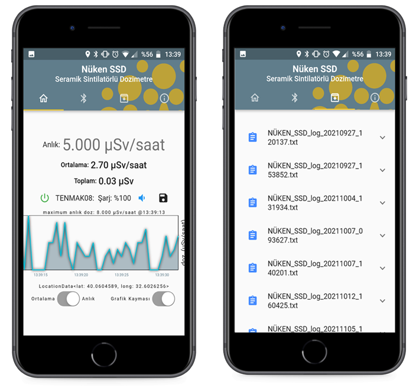

M.Sc. Candidate, Civil EngineeringHacettepe University · 2019–Present
UAV-based radiation monitoring and mapping
B.Sc. in Civil EngineeringMiddle East Technical University · 2005–2011
Core areas
Project and program delivery
Radioactive waste management
Nuclear safety and regulation
Technical procurement and QA/QC
Python, JavaScript and data analysis
Languages
Turkish Native
English Professional working proficiency
I work on radioactive waste management, nuclear safety and R&D projects.
I currently lead Türkiye's first near-surface radioactive waste disposal facility project and manage the EU-funded INSC cooperation project TR4.01/23. My background also includes nuclear safety inspection and licensing, structural engineering, radiation detector development, software, geospatial analysis and machine-learning research.
Selected responsibilities in radioactive waste management, international cooperation and technical procurement.
Project Lead · TENMAK
Türkiye's first near-surface radioactive waste disposal facility
Lead the project across site characterisation, facility design, safety case and safety analysis,
waste acceptance criteria, licensing, management-system, quality and stakeholder workstreams.
Convert policy, regulatory and engineering objectives into scope, milestones, dependencies, review gates and acceptance criteria.
Coordinate multidisciplinary technical teams and institutional stakeholders across interdependent work packages.
Contribute to preparation and review of an approximately 650-page technical specification covering facility design and safety-case development.
Project Manager · EU-funded INSC project
Cooperation with the Turkish Organisation in Charge of Radioactive Waste Management
TR4.01/23 · Contract No. INSC/2024/459-887
Coordinate TENMAK, the European Commission, international contractors, senior management and multidisciplinary experts.
Present specialised technical matters in clear, decision-ready form for project governance and management.
Technical specifications and procurement
Radioactive waste storage facilities in Istanbul
Led preparation of the technical specification used for procurement and supported market research, supplier engagement, quotation collection and technical clarification in a highly specialised market.
Management systems and quality
Governance, traceability and acceptance
Experience with roles and responsibilities, document and configuration control, QA/QC, supplier quality, nonconformance, corrective actions, auditability, records and objective acceptance evidence.
Technical work
Software, data and AI-assisted workflows developed alongside engineering and project responsibilities.
AI-assisted technical workflows
Structured analysis with expert review
I began experimenting with OpenAI tools through Playground before ChatGPT's public release. I now use ChatGPT Pro and other tools for requirements decomposition, technical-document comparison, specialised market research, bilingual drafting and decision support, with human review and traceability.
Sensor-to-cloud development
Radiation monitoring systems
Integrated detector hardware with Python analysis, Bluetooth and RF communication, Flutter mobile applications, cloud databases, web dashboards, mapping and 3D-printed enclosures.
Scientific computing
Data engineering and machine learning
Developed signal-processing and neural-network workflows, processed large seismic datasets and converted a PCA/SVD-heavy scientific application from R to Python, reducing execution time by approximately two-thirds.
International experience
Selected assignments, workshops and specialist training in radioactive waste management and nuclear safety.
OJT 2.2.17-1 — Design of Radioactive Waste Management Facilities
35-day on-the-job training in Finland with organisations experienced in RWMF design.
IAEA Technical Meeting on Status and Trends in Spent Fuel and Radioactive Waste Management
Vienna, Austria.
IAEA Regional Workshop on National Policy, Strategy and Programmes
Spent fuel and radioactive waste management · Vienna, Austria.
IAEA Regional Workshop on Repository Design Principles and Approaches
Peine, Germany.
European Commission tender evaluation — technical expert
Served as an evaluator for the TR4.01/23 procurement in Brussels, Belgium.
Interactive projects
Selected demonstrations of scientific computing, radiation monitoring, real-time data, mobile and web integration, mapping and 3D prototyping.
Python, Data & Scientific Computing
Scientific analytics, data engineering, machine learning, signal processing and visualization
I have used Python for more than a decade across data processing, scientific computing, data engineering, visualization,
machine learning and signal processing. My work includes preprocessing and post-processing pipelines, neural-network experiments,
geospatial analytics and database-backed applications. I regularly use NumPy, SciPy, pandas, Matplotlib, Plotly, HDF5, SQL/PostgreSQL,
TensorFlow, Keras and PyTorch. In one modernization project, I ported a PCA/SVD-intensive scientific workflow from R to Python and
improved its execution speed by approximately three times.
Selected code samples:
SIDS scientific workflow: ported a complex commercial scientific application from R to Python; selected code is redacted.
View sample code
Neural-network experiments: selected model trials and data-preparation workflows developed during graduate research.
Open notebook
Fractal animation notebook: generates Mandelbrot-set imagery and animations as a creative scientific-computing exercise.
Open notebook
Kik-Net data pipeline: converts millions of Japanese earthquake accelerogram records into structured NumPy arrays for analysis.
View code
C++ & Embedded Integration
Microcontroller programming, device interfaces and data transfer
I use C++ for microcontroller-based R&D, device interfaces and data transfer, building on an engineering programming foundation that began during university.
JavaScript & Web Applications
Interactive web applications, real-time data, Leaflet, Plotly, databases and visualization
This portfolio is itself a JavaScript project. I developed its interactive behavior and integrated Plotly for data visualization, Leaflet for geospatial applications and Online 3D Viewer for engineering models.
R&D Specialist — Turkish Energy, Nuclear and Mineral Research Agency (TENMAK)
This 0-to-1 R&D project developed a handheld radiation-detector prototype using in-house ceramic scintillators.
My contribution covered system integration across detector hardware, mobile and web software, cloud data, visualization and physical prototyping.
View the project poster.
Cross-Platform Mobile Application I developed the detector interface in Flutter/Dart for Android and iOS. The application receives measurements through Bluetooth, processes and displays instantaneous, average and cumulative dose values, and visualizes the live data stream. It can combine measurements with latitude/longitude, display value-based map markers, archive sessions, share records and synchronize data with a Firebase prototype database for web access and further analysis.

Selected mobile-application screens: live measurement and archive views.
Mechanical Design and 3D Printing I designed the prototype enclosure in Autodesk Fusion 360 and manufactured the physical case using an Ultimaker S5 additive-manufacturing workflow.
Cloud Database and Web Dashboard I developed an Angular dashboard connected to the Firebase prototype database. It presents incoming detector data through responsive Plotly visualizations and demonstrates how radiation workers or responsible organizations could review measurement histories, live readings and cumulative exposure information through a common web interface.
R&D Specialist — TENMAK · Current M.Sc. research focus
This project develops an aerial radiation-monitoring and mapping system that integrates detector data, wireless communication, geolocation, real-time visualization and post-processing. It also forms the current focus of my M.Sc. research.
View the project poster.
Ground Station Software for UAV Monitoring System I developed the JavaScript-based ground-station application to receive USB/RF data, process each reading and overlay measurements on a live map. The evolving prototype includes:
Direct serial/COM-port connection with user-selectable port and baud rate
Live measurement overlays colored with a user-selected colormap.
(I added all colormaps of matplotlib (thanks to
timothygebhard/js-colormaps))
Local log-file recording for traceability and post-processing.
Geospatial interpolation of collected data using kriging-based Python workflows.
LatLong( --- , --- )
Mechanical Design and 3D-Printed UAV Payload I designed the payload enclosure in Autodesk Fusion 360 and manufactured it on an Ultimaker S5 using PLA, with a robust 6 mm wall thickness for the prototype configuration.
Machine Learning Research — Seismic Data Portfolio
Hacettepe University graduate research and technical coursework
My current M.Sc. research focus is UAV-based radiation monitoring and mapping. The interactive module below presents an earlier
machine-learning research stream in which I processed approximately 1.5 million earthquake records from Japan's
Kik-Net database.
I developed data-engineering and visualization pipelines to investigate seismic-wave propagation through soil columns and used
neural-network models to explore relationships between bedrock recordings, site properties and surface response. A related
Vs30 classification project is available on
GitHub.
Kik-Net Earthquake Data Visualization For this research stream, I processed approximately 1.5 million earthquake recordings and built a visualization tool for data-quality review and exploratory analysis. Each Kik-Net event includes six accelerograms:
EW1: Bedrock-level recording along the east–west axis
EW2: Surface-level recording along the east–west axis
NS1: Bedrock-level recording along the north–south axis
NS2: Surface-level recording along the north–south axis
UD1: Bedrock-level recording along the vertical axis
UD2: Surface-level recording along the vertical axis
I transformed the accelerograms into the frequency domain using the Fast Fourier Transform. The modelling hypothesis treats the surface recording as the combined result of the bedrock input motion and the intervening soil column; bedrock motion and depth-dependent soil properties therefore serve as model inputs, while surface response is the target output. The soil profile contains two principal values at each depth:
Vs (m/s): Shear Wave Velocity of soil
Vp (m/s): Pressure Wave Velocity of soil
The lower panel shows the station’s depth-dependent Vs and Vp soil profile.
Atomic Energy Specialist / Nuclear Safety Inspector (2014–2019)
Turkish Atomic Energy Authority
From 2014 to 2019, I served in Türkiye's nuclear regulatory authority and supported the Akkuyu Nuclear Power Plant licensing and oversight program.
Reviewed and assessed civil and structural sections of the Preliminary Safety Analysis Report and related licensing submissions as a member of the Civil Engineering Project Group.
Completed an officially accepted expertise thesis on soil–structure interaction modelling of nuclear power plant structures, including 3D finite-element and stick models of a representative VVER reactor building and SASSI analyses.
Contributed to national regulations on nuclear power plant construction inspections and management systems in nuclear installations, translating international safety requirements into implementable provisions.
Served as an authorized nuclear safety inspector, led inspection teams at the Akkuyu NPP site and evaluated quality-management and corrective-action evidence.
Participated in manufacturer-approval inspections under the regulatory framework for nuclear-facility equipment procurement and manufacturer qualification.
Earlier Engineering Experience (2011–2014)
Structural design, technical-office delivery and construction quality
Structural Engineer — Koltek Consultancy
Designed and analyzed industrial structures, reviewed design submissions and supported construction-quality control across civil and military building projects, including stadium, hospital and university facilities.
Provided design and site-engineering support, resolved constructability issues, inspected work, and contributed to bills of quantities and final-account activities for a major infrastructure project in Saudi Arabia.
Selected Research & Publications
Structural dynamics, nuclear engineering, machine learning and radiation monitoring
Investigating the Effects of the Base Rigidity of Nuclear Power Plant Structures Through Seismic Soil–Structure Interaction Analyses — 5th International Conference on Earthquake Engineering and Seismology, 10 October 2019. Open paper.
Soil–Structure Interaction Modelling and Analysis Reviews at Nuclear Power Plant Structures — professional expertise thesis accepted by the Turkish Atomic Energy Authority; developed 3D finite-element and stick models and performed SASSI analyses. Open institutional archive record.
Ongoing M.Sc. research: UAV-based radiation monitoring and mapping, integrating sensing, wireless communication, geospatial analysis and data-driven decision support.
Vs30 Prediction from Earthquake Accelerograms with a Neural Network Model — interactive machine-learning research project. View repository.
Additional International Engagements (2014–2019)
Nuclear safety, management systems, construction oversight and disposal concepts
IAEA Regional Workshop on Ageing Management Programmes, including concrete, buried piping and flow-accelerated corrosion — Uppsala, Sweden · 7–9 September 2014.
Wakasa Wan Energy Research Center (WERC), Course of Nuclear Plant Safety — 16 November–11 December 2015, China.
European Nuclear Safety Training & Tutoring Institute (ENSTTI), Oversight of Nuclear Safety and Management Systems — 18–22 April 2016.
IAEA Technical Meeting on Challenges and Opportunities in the Construction Management of Advanced Nuclear Power Plants — Shanghai, China · 28–31 August 2018.
IAEA Workshop on Concepts and Designs for the Disposal of Small Volumes of Radioactive Waste — Lisbon, Portugal · 14–18 October 2019.
IAEA Training Workshop on the Generic Roadmap for a Deep Geological Disposal Programme — Vienna, Austria · 25–29 November 2019.